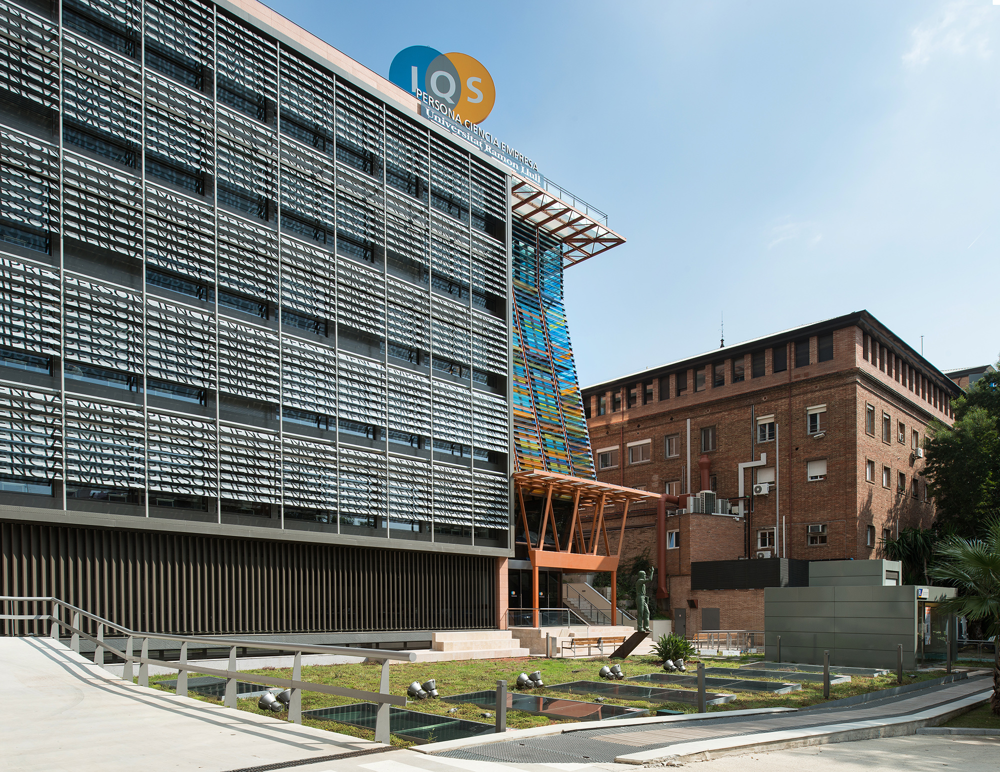

Announcement
【Partner Spotlight | IQS School of Management】
When people think of Spain, Barcelona is often known for its architecture and vibrant culture. For business students, it is also one of Europe's leading hubs for innovation and entrepreneurship.
Located in Barcelona, IQS School of Management is part of IQS, a founding member of Universitat Ramon Llull, and one of the dual-degree partners of Fu Jen imMBA. Founded in 1905, IQS School of Management is AACSB-accredited and is recognized for integrating management, technology, and innovation.
Through the imMBA 1+1 Dual Master's Degree Program, students may spend their second year at IQS, choosing between the Master in Industrial Business Management and the Master in International Marketing in a Digital Environment. Upon meeting the graduation requirements of both institutions, students earn master's degrees from both universities. Under the partnership agreement, imMBA dual-degree students are eligible for a tuition discount while studying at IQS.
The partnership offers students the opportunity to experience the European higher education system, broaden their global perspective, and thrive in an increasingly interconnected world.
